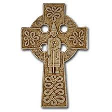

St. Patrick's Breastplate Prayer
I arise today

Through a mighty strength, the invocation of the Trinity,
Through the belief in the threeness,
Through confession of the oneness
Of the Creator of Creation.
I arise today
Through the strength of Christ's birth with his baptism,
Through the strength of his crucifixion with his burial,
Through the strength of his resurrection with his ascension,
Through the strength of his descent for the judgment of Doom.
I arise today
Through the strength of the love of Cherubim,
In obedience of angels,
In the service of archangels,
In hope of resurrection to meet with reward,
In prayers of patriarchs,
In predictions of prophets,
In preaching of apostles,
In faith of confessors,
In innocence of holy virgins,
In deeds of righteous men.
I arise today
Through the strength of heaven:
Light of sun,
Radiance of moon,
Splendor of fire,
Speed of lightning,
Swiftness of wind,
Depth of sea,
Stability of earth,
Firmness of rock.
I arise today
Through God's strength to pilot me:
God's might to uphold me,
God's wisdom to guide me,
God's eye to look before me,
God's ear to hear me,
God's word to speak for me,
God's hand to guard me,
God's way to lie before me,
God's shield to protect me,
God's host to save me
From snares of devils,
From temptations of vices,
From everyone who shall wish me ill,
Afar and anear,
Alone and in multitude.
I summon today all these powers between me and those evils,
Against every cruel merciless power that may oppose my body and soul,
Against incantations of false prophets,
Against black laws of pagandom
Against false laws of heretics,
Against craft of idolatry,
Against spells of witches and smiths and wizards,
Against every knowledge that corrupts man's body and soul.
Christ to shield me today
Against poison, against burning,
Against drowning, against wounding,
So that there may come to me abundance of reward.
Christ with me, Christ before me, Christ behind me,
Christ in me, Christ beneath me, Christ above me,
Christ on my right, Christ on my left,
Christ when I lie down, Christ when I sit down, Christ when I arise,
Christ in the heart of every man who thinks of me,
Christ in the mouth of everyone who speaks of me,
Christ in every eye that sees me,
Christ in every ear that hears me.
I arise today
Through a mighty strength, the invocation of the Trinity,
Through belief in the threeness,
Through confession of the oneness,
Of the Creator of Creation.